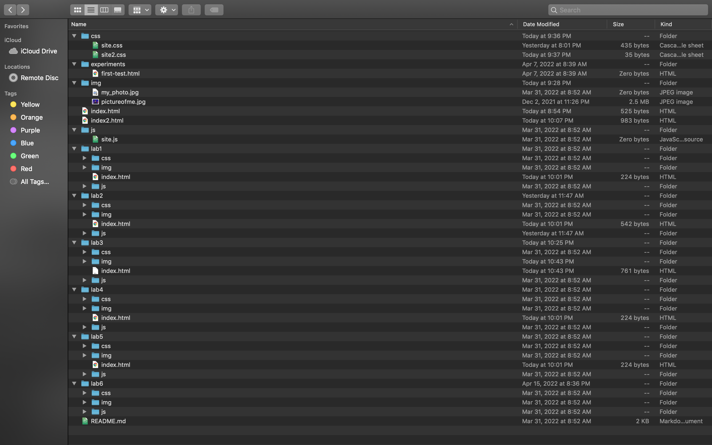
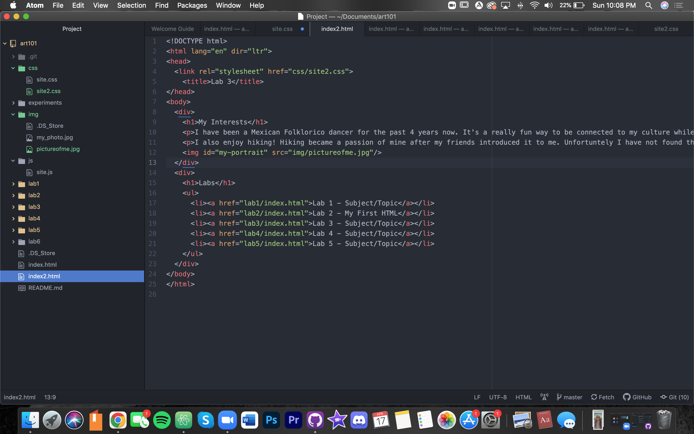
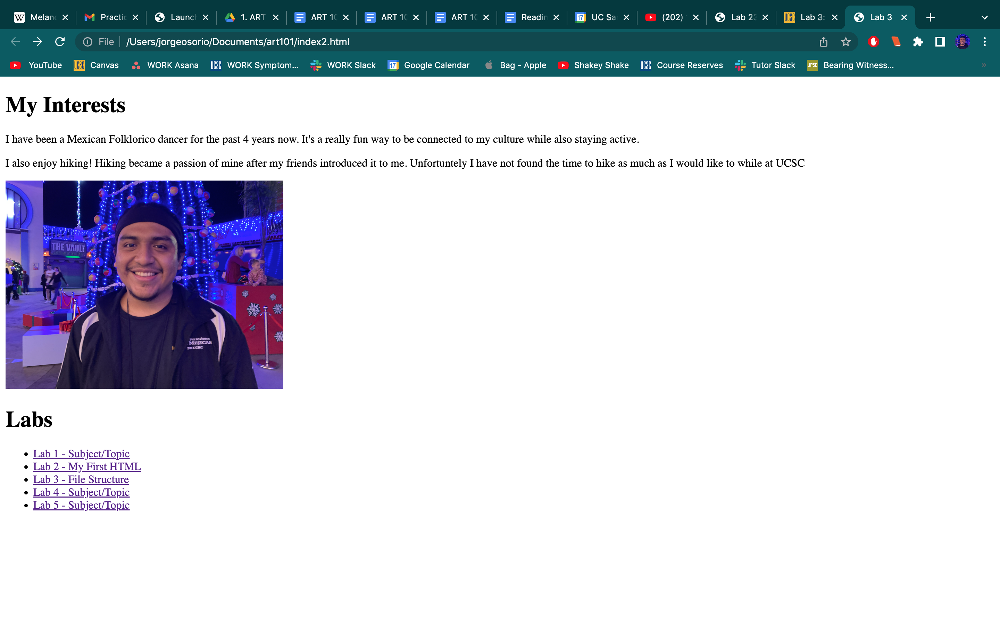
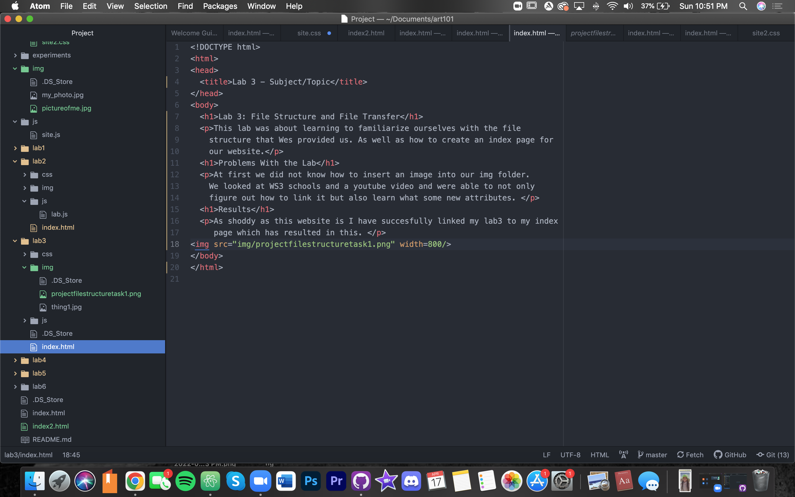
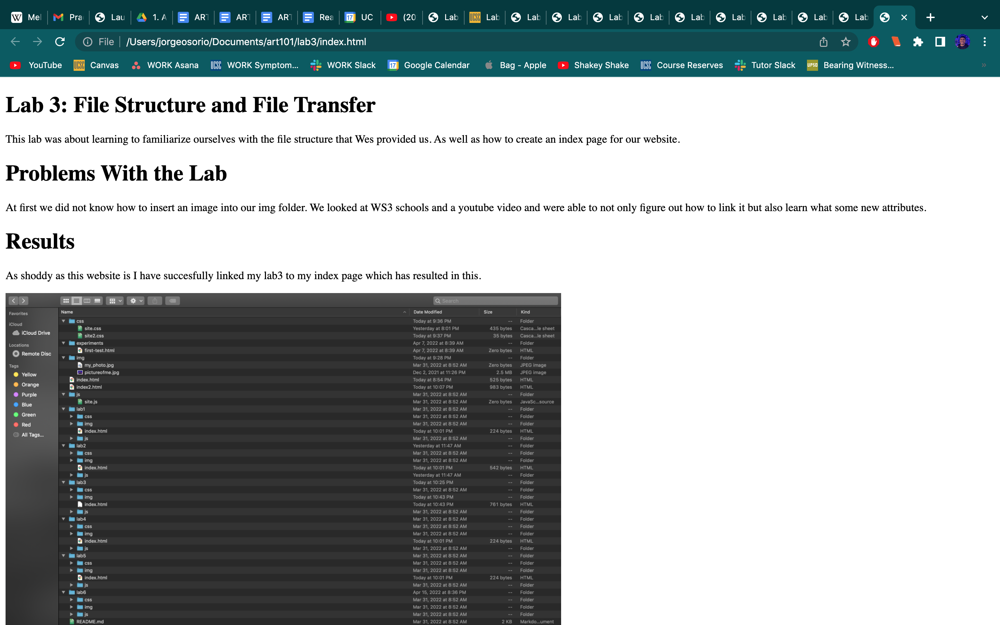

This lab was about learning to familiarize ourselves with the file structure that Wes provided us. As well as how to create an index page for our website.
At first we did not know how to insert an image into our img folder. We looked at WS3 schools and a youtube video and were able to not only figure out how to link it but also learn what some new attributes.
As shoddy as this website is I have succesfully linked my lab3 to my index page which has resulted in this.
    